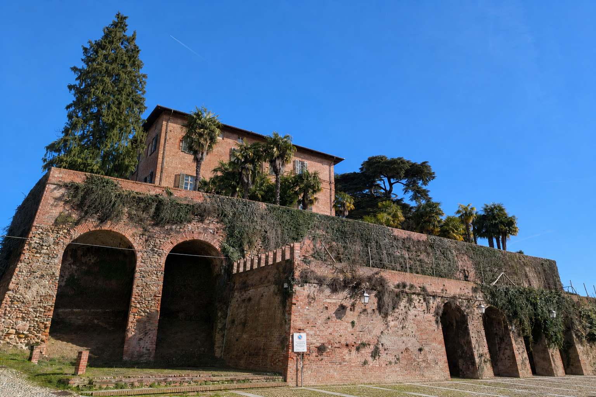
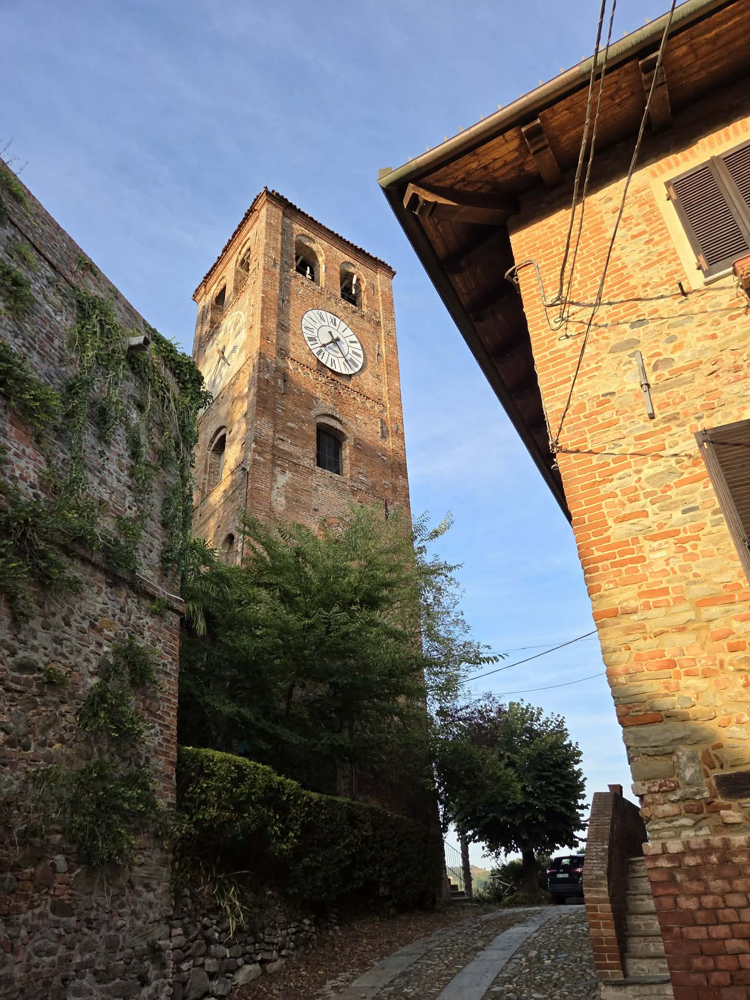

Un borgo tra boschi e colline
Casalborgone
Il ritmo quieto del Piemonte, tra storia millenaria, sentieri e sapori del Monferrato.
Piemonte segreto
Dove il tempo segue ancora la collina
Tra Torino e il Monferrato, Casalborgone custodisce un centro storico raccolto, chiese antiche e un castello che domina la valle. Un luogo da attraversare lentamente.

Il paese antico
Storie sulla pietra
Dal diploma imperiale del 999 a Casale Bergonis, dai conti Radicati ai Broglia: oltre mille anni hanno modellato il borgo e il suo castello.
Leggi la storia
Da non perdere
Il borgo, passo dopo passo
Il Castello, Santa Maria Maddalena, la Santissima Trinità e San Carlo disegnano un itinerario raccolto tra Piazza Statuto e Piazza Carlo Bruna.
Cosa vedere
Ospitalità rurale
Svegliarsi nel verde
Agriturismi, bed & breakfast e dimore storiche accolgono chi cerca silenzio, paesaggio e la naturale ospitalità piemontese.
Dove dormire
Sapori locali
A tavola, senza fretta
Trattorie, ristoranti, pizzerie e caffè di paese: indirizzi semplici per assaggiare il territorio e incontrare chi lo abita.
Dove mangiare